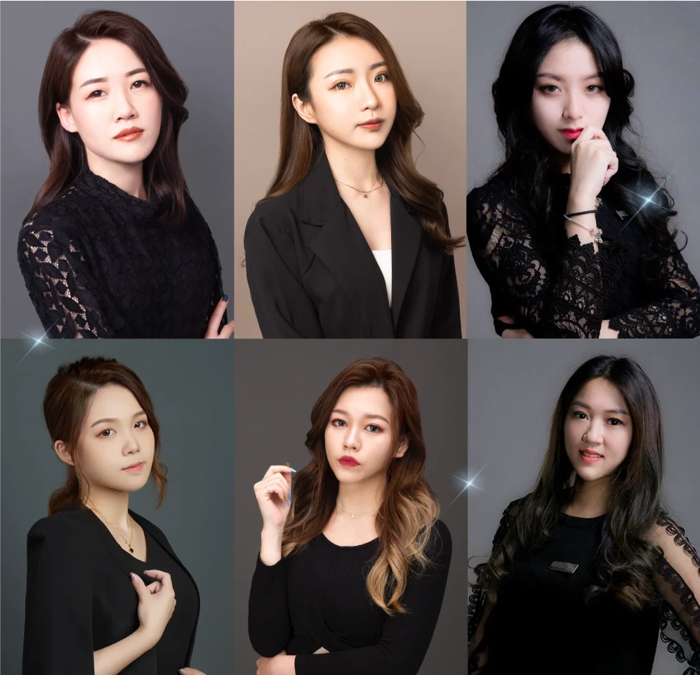

- 綻放獨特光芒的指尖
- 回歸純淨的細膩手感
- 重回新生的柔嫩足部
受夠做指甲還要踩雷？看不慣手腳暗沈厚繭？
She Nail專業保養級美甲服務
讓妳從小細節提升質感
舉手投足都散發動人光采
She Nail專業保養級美甲服務
讓妳從小細節提升質感
舉手投足都散發動人光采
- 光療凝膠美甲
-
Read more
- 手足滋潤護理
-
Read more
- 作品集
-
Read more

均勻乾淨 | 光滑平整
堅固持久 | 數百款式
為妳點綴指尖的美，皆為厚款光療，
採用堅固技法，提升持久度
單色、指定款或客製化設計，
皆為妳的小細節再增添一點美
採用堅固技法，提升持久度
單色、指定款或客製化設計，
皆為妳的小細節再增添一點美
- 色系款式選搭
- 針對您的喜好及指型與您溝通討論，挑選最適合您的美甲款式及色系。
- 去色
- 協助卸除您手上的指甲油。
- 清潔消毒
- 使用酒精為您進行手部的清潔與消毒。
- 指甲美型
- 根據您手指的形狀與長度，進行甲型修整。

- 指緣處理
- 修飾處理影響甲面的指緣死皮，保持指頭美觀。
- 甲面處理
- 處理甲面，以便凝膠與真甲能達到最佳黏合度。
- 上平衡劑
- 平衡甲面上的水油，以利後續凝膠牢固性。

- 底膠固定
- 底膠打底，讓美甲效果更持久。

- 凝膠上色
- 進行凝膠上色兩次，使甲面色澤飽滿、均勻平整。

- 建構膠加固
- 建構膠用來保護甲上凝膠。

- 上膠護色
- 保護凝膠與增加亮度。
- 指緣保養
- 使用頂級指緣油保養您的手指。

- 色系款式選搭
- 針對您的喜好及指型與您溝通討論，挑選最適合您的美甲款式及色系。
- 去色
- 協助卸除您手上的指甲油。
- 清潔消毒
- 使用酒精為您進行手部的清潔與消毒。

- 指甲美型
- 根據您手指的形狀與長度，進行甲型修整。

- 指緣處理
- 修飾處理影響甲面的指緣死皮，保持指頭美觀。

- 甲面處理
- 處理甲面，以便凝膠與真甲能達到最佳黏合度。

- 上平衡劑
- 平衡甲面上的水油，以利後續凝膠牢固性。

- 底膠固定
- 底膠打底，讓美甲效果更持久。

- 凝膠上色
- 進行凝膠上色兩次，使甲面色澤飽滿、均勻平整。
- 建構膠加固
- 建構膠用來保護甲上凝膠。

- 上膠護色
- 保護凝膠與增加亮度。

- 指緣保養
- 使用頂級指緣油保養您的手指。
- 『 能夠愜意美甲，何必找自己麻煩？
- 一目瞭然的比較，做出聰明選擇！ 』

深度滋養 | 修護受損
修復乾燥 | 舒緩緊繃
給妳無微不至的呵護
還原新生般吹彈可破的纖纖玉足嫩手
還原新生般吹彈可破的纖纖玉足嫩手
- 『 手足有沒有保養
- 明顯差異一比就知道！ 』

基礎香氛手部淨化
- 課程時間：30~40分鐘
- 保養範圍：手指至手腕
- 服務流程
- ＿ 消毒
- ＿ 指甲油去色
- ＿ 修型
- ＿ 指緣軟化
- ＿ 甘皮修剪
- ＿ 機器代謝兩側硬皮
- ＿ 乳液舒緩按摩
- ＿ 護甲油
- ＿ 指緣油
基礎嫩白足部淨化
- 課程時間：30~40分鐘
- 保養範圍：腳指至腳腕
- 服務流程
- ＿ 消毒
- ＿ 指甲油去色
- ＿ 修型
- ＿ 指緣軟化
- ＿ 甘皮修剪
- ＿ 機器代謝兩側硬皮
- ＿ 乳液舒緩按摩
- ＿ 護甲油
- ＿ 指緣油
歐舒丹頂級滋潤-手部
- 課程時間：60~90分鐘
- 保養範圍：手至手肘
- 服務流程
- ＿ 消毒
- ＿ 指甲油去色
- ＿ 修型
- ＿ 指緣軟化
- ＿ 甘皮修剪
- ＿ 機器代謝兩側硬皮
- ＿ 手掌代謝
- ＿ 去角質保養
- ＿ 淋巴排毒按摩
- ＿ 敷膜
- ＿ 乳液
- ＿ 護甲油
- ＿ 指緣油
歐舒丹頂級滋潤-足部
- 課程時間：60~90分鐘
- 保養範圍：腳至膝蓋
- 服務流程
- ＿ 消毒
- ＿ 指甲油去色
- ＿ 修型
- ＿ 指緣軟化
- ＿ 甘皮修剪
- ＿ 機器代謝兩側硬皮
- ＿ 甲溝清潔
- ＿ 足底代謝
- ＿ 去角質保養
- ＿ 淋巴排毒按摩
- ＿ 敷膜
- ＿ 乳液
- ＿ 護甲油
- ＿ 指緣油


- 為了保障消費者的權益
- She Nail採免包堂、單次消費

- 沒有眼花撩亂的服務契約，或分期付款
- 對消費者較無負擔，也降低需承受的風險
『 讓您無須擔心受怕 單純享受林恩的美好！ 』
讓您無須擔心受怕
單純享受林恩的美好！
單純享受林恩的美好！

究竟是怎樣的師資能讓顧客有超高黏著度
並在接受服務後，也選擇在林恩體驗其他項目
甚至讓遠道而來的顧客讚嘆不虛此行
並在接受服務後，也選擇在林恩體驗其他項目
甚至讓遠道而來的顧客讚嘆不虛此行
『 一切皆源自林恩對師資條件的近乎苛求
超乎業界水準的福利，也讓老師視為自己的事業打拼 』
超乎業界水準的福利，也讓老師視為自己的事業打拼 』
林恩為您的五大把關
 點亮機構認證錄取率僅3%平均資歷5年以上每季評核，未達標準強制回訓、汰除技能考核須達90分
點亮機構認證錄取率僅3%平均資歷5年以上每季評核，未達標準強制回訓、汰除技能考核須達90分此外我們定期學習並引進國外最新技術
並設立點亮培訓機構，提供完整培訓課程
內部外部持續交流進修，職人技能再加乘
並設立點亮培訓機構，提供完整培訓課程
內部外部持續交流進修，職人技能再加乘



我們所採用的高品質凝膠與手足護理產品，皆是由點亮培訓講師群親自嚴選採購，符合檢驗標準，深受消費者喜愛，給妳最優質的美甲光療與手足保養體驗。
- Fine Color凝膠
- 數百家美甲店皆有採用的品牌，凝膠品質有保證，不論是基本款，還是貓眼、漸層、法式、手繪等造型款，皆可保持指甲硬度、不易斷裂，且更加持久。
- 歐舒丹手足保養
- 全球知名品牌，擁有豐富天然的滋養成分，能有效密集修護滋潤脫皮乾裂的角質，讓妳的手、腳、指緣肌膚更加細緻柔軟，甲面更強韌閃耀。
舒適放鬆的環境
She Nail擁有寬敞舒適的環境，融合淡雅的裝潢風格，讓妳在最舒適的環境下完成指甲彩繪與手足保養。

服務價目表

關於She Nail
我們堅信妳的美可以在更多小細節中呈現。
不單只是外表，而是從內而外的綻放，從生活態度到一個眼神、一個微笑，
甚至是充滿光澤的的指尖，都是美麗優雅的表現。
希望在這裡與妳一起放慢腳步，在片刻中喘息，
找尋妳指尖的氣質、手足的細膩，以及更多細節中的美麗。
因為我們比您更在乎、更呵護您的雙手雙足
期望您一趟體驗，讓舉手投足更加美麗
不單只是外表，而是從內而外的綻放，從生活態度到一個眼神、一個微笑，
甚至是充滿光澤的的指尖，都是美麗優雅的表現。
希望在這裡與妳一起放慢腳步，在片刻中喘息，
找尋妳指尖的氣質、手足的細膩，以及更多細節中的美麗。
因為我們比您更在乎、更呵護您的雙手雙足
期望您一趟體驗，讓舉手投足更加美麗
品牌合作
仰賴各界的青睞，近年受到越來越多企業行號的信任，成為我們的合作夥伴。
不論是提供特約福利，還是異業合作品牌加乘，
皆讓我們提供更多更好優質服務，提升雙方品牌價值。
異業結盟/特約合作，也誠摯歡迎您的加入。
不論是提供特約福利，還是異業合作品牌加乘，
皆讓我們提供更多更好優質服務，提升雙方品牌價值。
異業結盟/特約合作，也誠摯歡迎您的加入。

- 上市櫃公司

- 頂級月子中心

- 醫美診所
- 知名建案管委會

- 區域社團

- 在地人氣商家

- 服飾業

- 婚紗業

Lynn精緻美學-從心出發，呵護您從頭到腳的美麗